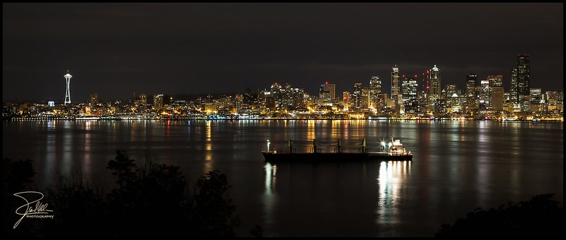

Where is Grey's Anatomy located?
Grey's Anatomy is set in a hospital in Seattle.
The Hospital:
Many of the doctors within the show work at the same hopsital all throughout the series.
Despite the hopsital being the same in the show, it has had many name changes.
- Originally, it was called Seattle Grace Hospital
- It then merged with a different hopsital, and was renamed
again to Seattle Grace Mercy West Hospital
- Finally, a group of the doctors bought the hopsital and
renamed it Grey Sloan Memorial Hospital, in honor of two doctors that died.
Where the show is shot:
Even though it is set in Seattle, the show is actually shot in Los Angeles.

- image: Seattle by Frank Kehren at https://www.flickr.com/photos/77759596@N00/6188583169,CC BY-NC-ND 2.0.